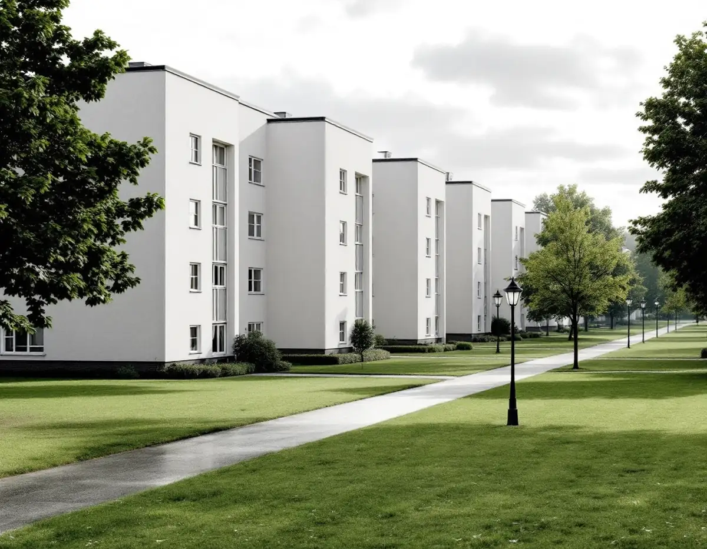
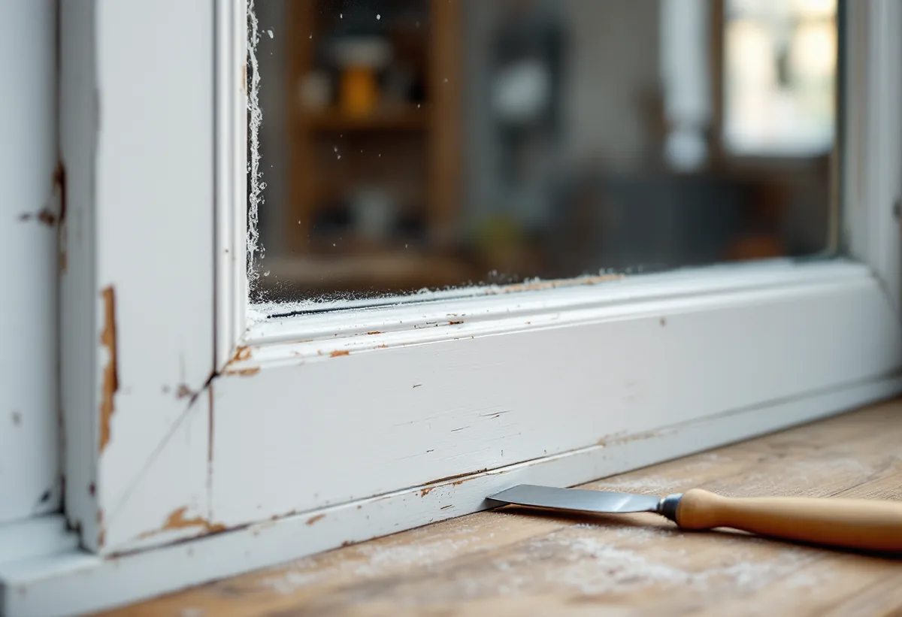
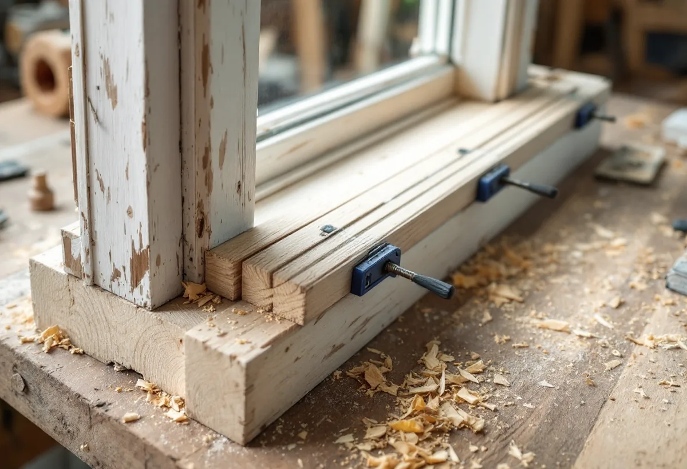

Besiktning
Vi går igenom varje fönster och noterar glas, kitt, färg och om bågarna är limmade.
Gärdesstaden runt Tessinparken byggdes 1932–37 och beskrivs i stadens översiktsplan som en av Sveriges mest kända miljöer från funktionalismens genombrottstid. Geal Entreprenad AB renoverar fönster på Östermalm och tar hand om 1930-talets bågar så att glas, profiler och kulörer får sitta kvar.

Stadsmuseets guide Stockholms Spår berättar att Ladugårdsgärdet hade varit militärt övningsfält sedan 1600-talets mitt. Militären flyttade ut 1905, och en stadsplanetävling vanns 1929 av arkitekten Arvid Stille. Planen bygger på de funktionalistiska idealen med friliggande hus i parkliknande grönska, utan staket eller slutna gårdar. Utbyggnaden började 1932 vid Valhallavägen, husen kring Tessinparken var färdiga 1937 och punkthusen på Gärdeshöjden stod i stort sett klara 1940. Sture Frölén ritade flera av husen. På nedre Gärdet ligger gavlarna på rad utmed Tessinparken, och där skulle alla hus från början ha skiffertak. Balkongerna fick många olika former av räcken, och ytterportar av glas och stål växlar med ekportar.
Översiktsplanen beskriver Gärdesstaden som en av Sveriges mest kända och helgjutna miljöer från funktionalismens genombrottstid, med stora arkitekturhistoriska och stadsbyggnadshistoriska kulturvärden. Bland de värdebärande karaktärsdragen nämns det omsorgsfulla utförandet av husens byggnadsdetaljer, som fönster, entrépartier och balkongräcken. Området skyddas av miljöbalkens bestämmelser om nationalstadspark, och Östermalms parkplan anger att Tessinparken ingår i nationalstadsparken sedan 1995.

Riksantikvarieämbetets skrift om fönster beskriver hur de spröjsade bågarna försvann igen på 1930-talet. Med funktionalismen fick glasformatet styra, och bågen försågs med en enda hel glasruta. Fönstren blev också lägre, eftersom de anpassades till de nya, lägre rumshöjderna.
Glaset i de här rutorna kan vara äldre än man tror. Enligt skriften användes cylindermetoden, där glaset blåstes som en cylinder och planades ut, ända fram till 1933 i Sverige, medan maskindraget glas tillverkades med Fourcaultmetoden från 1913. Landets största fönsterglasbruk under 1900-talets första decennier, Glava i Värmland, blåste glaset för hand fram till 1927. I dag tillverkas bara floatglas. Det blåsta eller maskindragna glaset har en levande, ojämn yta som floatglaset saknar, och vid glasning av äldre fönster i kulturhistoriskt värdefulla hus bör gammalt glas användas så långt det går. Vi tar därför ur och sparar hela rutor när en båge renoveras, och en sprucken ruta kan ersättas med tillvarataget äldre glas.
Äldre fönster sattes ihop med tappar och träplugg utan lim och kan därför tas isär och lagas, skriver Länsstyrelsernas blad om fönster. Riksantikvarieämbetet påpekar att limmet introducerades i fönsterkonstruktionerna just på 1930-talet: en lärobok från 1931 anger att alla sammansättningar i fönsterbågar ska limmas. En båge från Gärdets första år kan därför vara limmad, och då går den inte att slå isär på samma sätt som ett sekelskiftesfönster.
Skadat virke byts i stället där det sitter. RAÄ beskriver hur bågens nedre del kan halvsulas, så att bara de yttre delarna ersätts, och hur nytt virke snedskarvas för att få en så lång anliggningsyta som möjligt och limmas med vattenfast lim. Profilen fräses med originalet som förebild, och lagningsvirket bör ha samma kvalitet och årsringarna orienterade på samma sätt som det gamla, så att det inte uppstår spänningar.
Stockholms stad räknar nationalstadsparken till riksintressena för kulturmiljövården på Stadsmuseets karta. Ligger en byggnad där behöver du söka bygglov för åtgärder som annars kan vara bygglovsbefriade, och att byta material eller kulör på fönster, ändra profileringen på karmar och bågar eller byta upphängning räknas som ändringar av fönster. En renovering som behåller glas, profiler och kulör hör inte till den listan.
I en bostadsrätt avgör föreningens stadgar vilka delar av fönstret som är ditt ansvar, och Skatteverket ger rotavdrag för arbete på insidan men inte för utsidan eller mellan bågarna. Boverkets energiguide beskriver hur den inre rutan kan bytas till eller kompletteras med energiglas, och den som har kvar äldre munblåst eller valsat glas kan kanske använda det som ytterrutor. Om måleri i stenstadens våningar kan du läsa under målare på Östermalm, och om nya fönster under fönsterbyte.

Vi går igenom varje fönster och noterar glas, kitt, färg och om bågarna är limmade.
Vi kontrollerar Stadsmuseets karta och vilka delar stadgarna lägger på dig.
Insida och utsida, lagning och glas står var för sig.
Hela rutor tas ur och sparas, spruckna ersätts helst med äldre glas.
Skadat virke halvsulas eller snedskarvas och limmas med vattenfast lim.
Kittfalsar grundas, rutorna kittas och bågarna målas i tunna lager.
I en bostadsrätt ger Skatteverket avdrag för arbete inne i lägenheten som du ansvarar för enligt stadgarna. På fönstren omfattar det glasbyte i den inre bågen, tätningslist, innerfönster, fönsterfoder och målning av insidan, men inte byte av gångjärn.
Avdraget är högst 30 procent av arbetskostnaden, högst 50 000 kr per person och år och högst 75 000 kr tillsammans med rutavdrag. Det är bara arbetskostnaden som ger avdrag. Vi drar avdraget direkt på fakturan.
Antalet fönster, hur många rutor som ska tas ur och sättas tillbaka, om virke måste snedskarvas i limmade bågar och om både insida och utsida ingår påverkar mest. Efter ett gratis platsbesök får du ett skriftligt kostnadsförslag.
Byta eller renovera fönster.
Fönsterbyte i Stockholm →Kulturvärden, förvanskningsförbud och klassning.
Badrumsrenovering på Östermalm →Slå ihop två lägenheter.
Byggföretag på Östermalm →Gatufasad, gårdsfasad och lovfrågan.
Fasadrenovering på Östermalm →Stenstaden, Lärkstaden och villorna.
Fönsterbyte på Östermalm →Mönsterparkett, lack och olja.
Golvläggare på Östermalm →Slipa om eller underhålla lackade golv.
Golvslipning på Östermalm →Stora lägenheter och kulturvärden.
Köksrenovering på Östermalm →Limfärg i taken, dekor och lov.
Målare på Östermalm →Taklandskapet och balkongerna.
Plåtslagare på Östermalm →Klassade våningar och bostadsrätt.
Tapetsering på Östermalm →